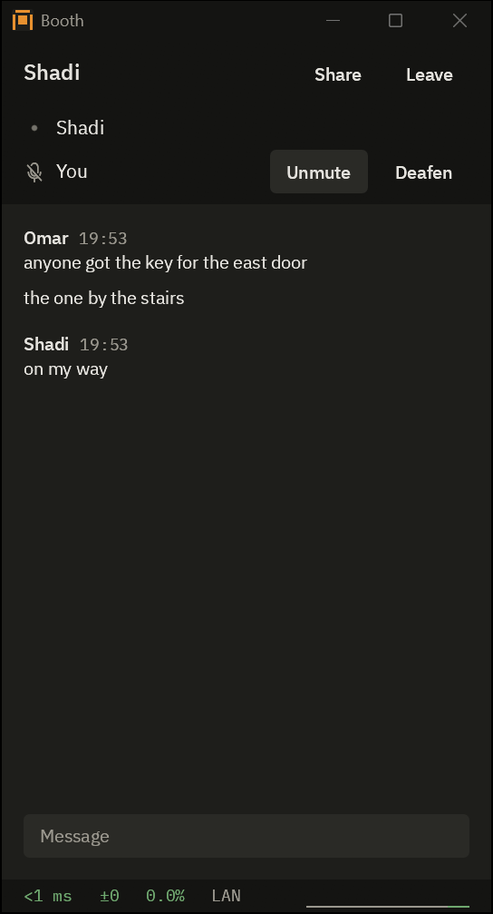
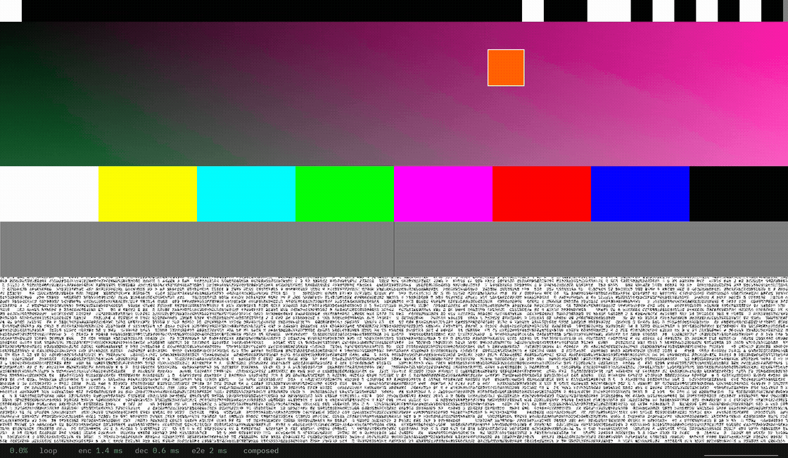

Voice, text chat and screen sharing for a few friends on Windows, built for the lowest delay.
One friend hosts on their own PC, the others join with an invite code, and packets go straight between each friend's PC and the host's, encrypted. No accounts, no cloud, no server in the middle. It is free and open source.
Download
Version 0.2.2. The installer adds Booth to the Start menu. The zip needs no install: unzip it anywhere and run booth.exe. It needs Windows 10 version 2004 or later, or Windows 11, 64-bit, with a DirectX 12 graphics driver. Older versions and how to check a download are on the releases page.
The first time
- SmartScreen says "Windows protected your PC" because the exe is not code signed yet: More info, then Run anyway.
- With Smart App Control on, Windows 11 blocks Booth outright, with no Run anyway, until the exe is signed.
- Booth asks once for administrator rights for its firewall rule: Allow, then Yes.
- Use a wired or USB headset: Booth has no echo cancellation, so speakers send your friends' voices back to them, and Bluetooth adds tens of milliseconds before Booth does anything.

Starting a room
- Press Host, then Copy.
- Send the invite over whatever chat you use. It lets in one friend and runs out after 10 minutes. For a group chat, press "single use, 10 min" to switch it to "anyone, 24 h", then Copy again. The invite carries your internet address, so never post it in public.
- Your friend runs Booth too and pastes the invite under Join a room. Next time they rejoin from Known hosts.
If a friend cannot get in, Booth shows them a code to send back to the host, who pastes it under the invite; failing that, forward UDP 41000 to the host's PC, or use Tailscale or WireGuard.
Booth starts in push to talk: hold Right Ctrl to talk, or pick Open mic in Settings. Hotkeys work with a game in focus, unless the game runs as administrator, and you can change them in Settings:
- Right Ctrl
- push to talk
- Ctrl+Shift+M
- mute
- Ctrl+Shift+D
- deafen
- Ctrl+Shift+S
- twice within a second to share, once to stop
- Ctrl+Shift+Space
- show or hide Booth
- Ctrl+Shift+I
- the stats panel
What it does
- Voice in 5 ms Opus frames, with a jitter buffer that starts at the minimum. While the link loses packets, each one also carries the frame before it, and from 5 percent loss voice moves to 10 ms frames with Opus's own repair data.
- Screen sharing with Desktop Duplication and GPU encoding, up to 1440p at 120 fps, H.264 or HEVC.
- Voice, video and chat over UDP, never in plain text, not even on a LAN.
- Ping, jitter and loss always on screen in a room, along the bottom of the room window and the viewer.
Measured
On my PCs, capture to display (median): about 5 ms for a 1440p120 test pattern with host and viewer on the same PC, and 22 to 32 ms over the internet to my laptop on Wi-Fi. For voice I have measured only the playback side so far: 20 ms.

Before you try it
- Windows only, for the host and every friend: no Mac, Linux or phone.
- Up to eight people in a room, the host included.
- One person shares at a time, a whole monitor, view only for now.
- Friends watching a share over the internet split the host's Video upload setting, 15 Mbit/s unless changed in Settings, so more watchers get a softer picture.
- No relay: when two routers block a direct path, Booth says why and what would fix it.
- Sharing from Intel graphics encodes in software for now, H.264 up to 1080p at 60 fps. Sharing from AMD graphics goes through Windows' hardware encoder, and I have not had an AMD PC to test it on yet.
Security
In a Noise handshake (Noise_IKpsk2_25519_ChaChaPoly_BLAKE2s) both sides prove who they are; every later packet is encrypted. No crypto of my own: the snow, dalek and RustCrypto crates. The host decrypts and forwards everything in the room, so only join a host you trust. The handshake and session code has not had an outside audit yet.
To find its address from outside, Booth asks two public STUN servers, Cloudflare's and Google's, unless you change the list in Settings; they see your address and nothing else. The only other outside contact is GitHub, and only if you turn on the update check in Settings.
Source and license
Booth is written in Rust and licensed under MIT or Apache-2.0, at your option. The two FFmpeg DLLs that come with it are under the LGPL 2.1 or later, and their exact source is in a release of its own. The code, how to build it and every third-party license are on GitHub.